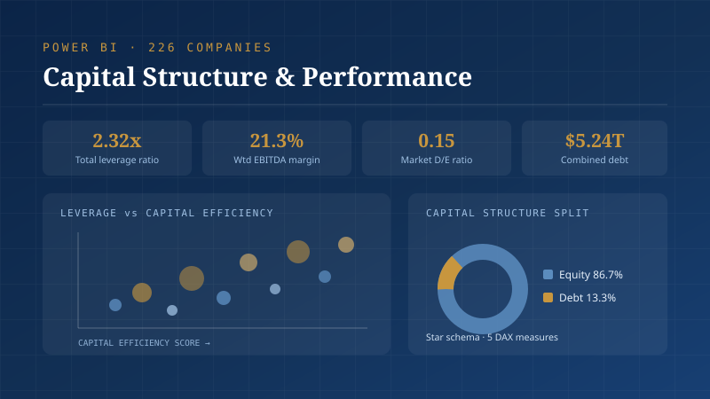

Capital Structure & Financial Performance Dashboard
Comparing how 226 large-cap companies are financed is near-impossible in a flat file with dozens of columns per company. Analysts couldn't see which firms were funded efficiently and which carried heavy debt against what they actually earn.
Cleaned the raw financials in Python — standardised currency to millions, flagged negative-equity and incomplete rows — then restructured the flat file into a star schema in Power Query (fact table plus company, industry and margin-stage dimensions). Built five DAX measures for leverage, weighted EBITDA margin, market D/E and capital efficiency, each wrapped in DIVIDE() to fail safely on zero denominators.
One view showing the relationship between leverage and profitability: a scatter of leverage against capital efficiency, EBITDA margin ranked by industry, and a waterfall tracing gross margin down to net margin — which links interest costs directly back to capital structure. Full cleaning log published alongside the model.